Básico · Capítulo 01
Integrar la librería en Rust
Ejecuta tu primer workflow dentro del proceso Rust, sin HTTP y sin otro servicio.
Arranque, uso y cierre de la instancia

La aplicación compone el motor, conserva el runtime y utiliza su handle para preparar y ejecutar workflows. El cierre ocurre al terminar el host.
1. Agrega la dependencia local
Este ejemplo supone que mi-aplicacion/ y workflow-forge/ son carpetas hermanas. Ajusta path a tu checkout; no es una ruta del servidor de producción.
proyectos/
├── workflow-forge/
└── mi-aplicacion/
├── Cargo.toml
├── src/main.rs
└── workflows/normalizar.json[package]
name = "mi-aplicacion"
version = "0.1.0"
edition = "2024"
rust-version = "1.98.1"
[dependencies]
workflow-forge = { path = "../workflow-forge/crates/forge", default-features = false }
serde_json = "1"
tokio = { version = "1", features = ["macros", "rt-multi-thread"] }default-features = false conserva protocolo, engine y proveedores de memoria. integrations habilita conectores HTTP/archivos/CSV; sqlite habilita el proveedor durable; full habilita ambos. Una feature no selecciona automáticamente esos proveedores.
2. Guarda el workflow
Guarda este documento como workflows/normalizar.json. Usa una operación instalada por la composición estándar; no necesitas escribir un plugin.
{
"format": "forge.workflow/2",
"schema_dialect": "https://json-schema.org/draft/2020-12/schema",
"id": "manual.normalizar",
"revision": "r1",
"input_schema": {
"type": "string",
"maxLength": 128
},
"output_schema": {
"type": "string",
"maxLength": 128
},
"entry": "limpiar",
"nodes": [
{
"id": "limpiar",
"kind": "operation",
"operation": {
"id": "forge.text.trim",
"contract": "1",
"implementation": "r1"
},
"config": {},
"input": {
"select": {
"source": "input",
"pointer": ""
}
}
}
],
"edges": [],
"output": {
"select": {
"source": "node",
"node": "limpiar",
"pointer": ""
}
}
}La entrada es un string y la salida también. pointer: "" selecciona el valor completo.
3. Arranca, prepara, ejecuta y cierra
use serde_json::json;
use workflow_forge::prelude::*;
#[tokio::main]
async fn main() -> Result<(), Box<dyn std::error::Error>> {
let runtime =
EngineRuntime::boot(WorkflowBuilder::standard().build()?, BootOptions::default()).await?;
let app = runtime.application();
let access = AccessContext::trusted("default");
let outcome = async {
let plan = app
.prepare_json(
access.clone(),
include_bytes!("../workflows/normalizar.json"),
)
.await?;
let receipt = app
.start(
access.clone(),
StartRunRequest::new(plan, json!(" Rafael ")),
)
.await?;
let run = app.wait(access.clone(), receipt.run_id.clone()).await?;
if run.state != RunState::Succeeded {
return Err(run.error.unwrap_or_else(|| {
ForgeError::new("manual.not_succeeded", "La ejecución no terminó con éxito")
}));
}
app.result(access, receipt.run_id).await
}
.await;
// Apagar también cuando prepare/start/wait devuelve un error.
let shutdown = runtime.shutdown(ShutdownOptions::default()).await?;
if shutdown.forced || !shutdown.pending.is_empty() {
return Err("El cierre dejó trabajo pendiente".into());
}
let output = outcome?;
assert_eq!(output, json!("Rafael"));
println!("{output}");
Ok(())
}El bloque outcome captura errores antes del apagado: no abandona el runtime por un ? durante la ejecución. El programa comprueba el estado porque wait también puede devolver un run bloqueado o fallido.
4. Ejecútalo
cargo runSalida esperada: "Rafael". Para ejecutar la versión incluida sin crear otro proyecto:
cargo run --manifest-path manual/ejemplos/Cargo.toml --locked --bin inicioEl archivo descargable inicio.rs usa una ruta de include_bytes! adaptada a su propia carpeta; en el programa de arriba ya está ajustada a src/main.rs.
5. Conserva la instancia en tu aplicación
- Durante el arranque: configura recursos y registra módulos; construye una sola composición.
- Conserva
EngineRuntimeen el dueño del lifecycle y comparte clones deWorkflowApplicationcon tus handlers o workers. - Prepara una definición y reutiliza el plan para distintas entradas de esa misma instancia.
- Al cerrar la aplicación: deja de recibir trabajo, espera
shutdowny revisa su reporte.